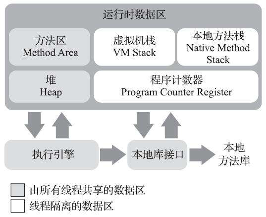
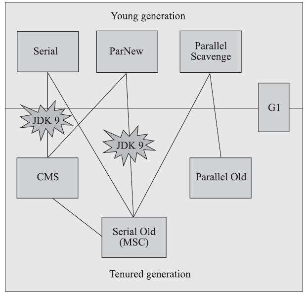

java虚拟机内存管理总结
本文最后更新于：4 个月前
java内存区域分配

线程私有数据区
程序计数器
可以看成是当前线程所执行的字节码的行号指示器唯一一个不会产生任何OOM情况的区域
java虚拟机栈
- 生命周期与线程相同
- 储存单位为栈帧；每个方法执行时创建一个，储存局部变量表，操作数栈，动态链接，方法出口，等信息；
- 方法开始执行时对应的栈帧入栈，方法执行结束对应的栈帧出栈
本地方法栈
与虚拟机栈类似，只是服务于虚拟机使用到的本地方法，对于具体的实现方法没有要求，HotSpot等虚拟机甚至将其与虚拟机栈合二为一
线程共享数据区
java堆
几乎所有对象实例以及数组都要在堆上分配
JIT编译器、标量替换技术等可能会使对象分配至其他区域
方法区
储存运行时常量池、已被虚拟机加载的类信息、常量、静态变量、即时编译器编译后的代码等数据
java垃圾收集
垃圾的判定
引用计数法
维护一个引用计数器，对象每被引用一次计数器就+1；
缺点是无法识别循环引用，难以做到线程同步；java并未采用
可达性分析算法
以“GC Roots”为起点进行搜索，如果对象不可达便认为可回收
可作为GC Roots 的对象：- 虚拟机栈（本地方法栈）栈帧局部变量表中引用的对象
- 方法区中静态属性引用的对象
- 方法区中常量引用的对象
垃圾收集算法
标记-清除算法
首先使用可达性算法将所有可回收的对象进行标记，之后进行回收
缺点：效率低、产生空间碎片
复制算法
将内存分为两个区域实际使用时在一个区域中分配对象；当这个区域满后再将所有可用对象复制进另一个区域，袁曲宇清空。
实际实现中往往是将内存分为一个较大的Eden空间和两个较小的Survivor空间，只使用Eden和一块Survivor，回收时一次性将两块空间中的活对象复制进空闲的Survivor。HotSpot默认Eden与Survivor是8:1；当Survivor空间不足时还需要依赖其他内存（老年代）来进行分配担保。
缺点：对象存活率较高时效率变低、需要担保
标记-整理算法
标记过程与标记-清除算法相同，但是后续步骤不是直接对可回收对象进行清理，而是让所有存活对象向一端移动，然后直接清理边界以外的内存。
分代收集
虚拟机将java堆分为新生代与老年代，目的是便于针对不同的区域使用不同的收集算法；新生代中的对象存活率较低，所以可以使复制算法；老年代中对象存活率高且没有担保，所以要用标记-清除或者标记-整理算法。
内存分配与回收策略
对象优先在Eden分配
大对象直接进入老年代
长期存活的对象进入老年代
动态对象年龄判定
在Survivor空间中相同年龄所有对象大小的总和大于Survivor空间的一半,年龄大于或等于该年龄的对象就可以直接进入老年代,无须等到MaxTenuringThreshold中要求的年龄
空间分配担保
在发生Minor GC之前,虚拟机会先检查老年代最大可用的连续空间是否大于新生代所有对象总空间,如果这个条件成立,那么Minor GC可以确保是安全的。如果不成立,则虚拟机会查看HandlePromotionFailure设置值是否允许担保失败。如果允许,那么会继续检查老年代最大可用的连续空间是否大于历次晋升到老年代对象的平均大小,如果大于,将尝试着进行一次Minor GC,尽管这次Minor GC是有风险的;如果小于,或者HandlePromotionFailure设置不允许冒险,那这时也要改为进行一次Full GC
具体的垃圾收集器
| serial | ParNew | Parallel Scavenge | serial Old | Parallel Old | CMS | ||
|---|---|---|---|---|---|---|---|
| 线程 | 单线程 | 多行程 | 多线程 | 单线程 | 多线程 | 仅初始标记单线程 | 仅初始标记单线程 |
| 并发 | 否 | 否 | 否 | 否 | 否 | 仅初始标记、重新标记不并发 | 仅并发标记并发 |
| 特点 | 并行版serial | 追求更高吞吐量 | 老年代版serial | 老年代版Parallel Scavenge | 追求最短停顿时间 | 次时代垃圾收集器 |
TIPS：
- 并行（Parallel）指多条垃圾收集线程同时工作，但是还是需要暂停所有用户线程
- 并发（Concurrent）即垃圾收集线程与用户线程同时工作
- 吞吐量（Throughput）即 运行用户代码时间/（运行用户代码时间+垃圾收集时间）
本博客所有文章除特别声明外，均采用 CC BY-SA 4.0 协议 ，转载请注明出处！